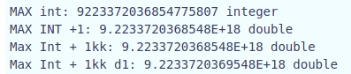

Challenge Data
- Name: INF
- Category: Misc
- Points: 427/500
- Description: A PHP code
Solution
The php code was:
<?php
$i = 0; $answer = '';
while (true) {
$answer = md5($answer, true);
if (bin2hex($answer) === '4f6dfbf954845988ff49f95b61c68005') echo "EKO{$i}";
}
?>
Basically, the code is calculating the hash(hash(hash(hash(....(hash(""))))))). The flag can be think as "the number of times you need to apply hash recursively until you get the value '4f6dfbf954845988ff49f95b61c68005'. Trying to crack that hash, won't be helpful. We just need the number of times.
TL;DR
Just run the code in PHP, wait for a while. You'll get the answer.
Ideas (which didn't work)
When I first saw this challenge I thought it would be impossible to run it and find the answer (mental note for next similar challenge, run it anyways). (I think that the author of this challenge may have think that dumb people like me will think the same thing xD). So I started thinking about the different ideas.
When you define a variable in PHP with:
$variable = 0;
The type of that variable is Integer. So I thought what would happen if you achieve the PHP_INT_MAX? I developed a little PHP snippet which gave me a very interesting result:
<?php
$i = PHP_INT_MAX;
echo "MAX int: " . $i." " .gettype($i)."<br>";
$i++;
echo "MAX INT +1: " . $i. " " .gettype($i)."<br>";
$iteration = 100000000;
$j=$i + $iteration;
while ($iteration!=0){
$iteration--;
$i++;
}
echo "Max Int + 1kk: ".$i. " " .gettype($i)."<br>";
echo "Max Int + 1kk d1: ".$j." " .gettype($i)."<br>";
The result of running this code is: 
Once the integer value achieves PHP_INT_MAX +1, it dinamically changes its type and get convered to a Double. However, as can be seen in the screenshot, the once the variable is a double the ++ doesn't increments its value again. This meant that if the value '4f6dfbf954845988ff49f95b61c68005' is achieved after PHP_INT_MAX times, the value of $i will be 9.22337203685E+18. I thought it was a solid idea, so I tried to use this as a flag. But it didn't work. Reason: The hash value was achieved before PHP_INT_MAX times.
When we decided to run this code anyways, I developed a C script, but was worthless due to another teammate got the flag bofore just using the PHP :) .
Anways, here is the code. I based my code on an answer of the thread of stackoverflow that I don't find now :(
#include <stdio.h>
#include <stdlib.h>
#include <string.h>
#if defined(__APPLE__)
# define COMMON_DIGEST_FOR_OPENSSL
# include <CommonCrypto/CommonDigest.h>
# define SHA1 CC_SHA1
#else
#include <openssl/md5.h>
#endif
char *str2md5(const char *str, int length) {
int n;
MD5_CTX c;
unsigned char digest[16];
char *out = (char*)malloc(33);
MD5_Init(&c);
while (length > 0) {
if (length > 512) {
MD5_Update(&c, str, 512);
} else {
MD5_Update(&c, str, length);
}
length -= 512;
str += 512;
}
MD5_Final(digest, &c);
for (n = 0; n < 16; ++n) {
snprintf(&(out[n*2]), 16*2, "%02x", (unsigned int)digest[n]);
}
return out;
}
int main(int argc, char **argv) {
int j=0;
char *output_mine = malloc(33);
char* output;
output = str2md5("", strlen(""));
memcpy(output_mine, output, 32);
free(output);
while (1){
if (strcmp(output_mine,"4f6dfbf954845988ff49f95b61c68005") == 0){
printf("%s\n", output_mine);
printf("%d\n",j);
return 0;
}
output = str2md5(output_mine, strlen(output_mine));
memcpy(output_mine, output, 32);
free(output);
j = j + 1;
}
//
return 0;
}